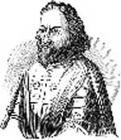

Hıristiyanlar’a göre o efsanevi bir kahraman ve bir mertlik sembolüydü. Müslümanlara göreyse Orta Doğu’da katliam, yıkım ve sefalet yaratan nedensiz bir savaşın temsilcisi...
Bouillon’lı Godfrey (1060-1100), 1. Haçlı Seferi sırasında Hıristiyan ordularını yöneten liderlerden biriydi. Haçlı Seferleri, Kudüs’ü geri almak için kutsal topraklara düzenlenen bir işgal hareketiydi. Bu olay her iki din için de bir dönüm noktası olmuş ve yüzyıllar süren bir gerilime yol açan olumsuz sonuçları kimilerine göre günümüze kadar devam etmiştir.
1. Haçlı Seferi, Papa 2. Urban (1035-1099) tarafından 1095 yılında başlatılmıştı. Papa, Avrupa krallarına güçlerini bu harekete katıp katamayacaklarını soran mektuplar yollamıştı. Savaşın görünürdeki sebebi kutsal topraklardaki Hıristiyanların savunulması ve Bizans İmparatorluğu’na destek olunmasıydı. Zira Bizans, Müslümanlar karşısında giderek daha fazla toprak kaybetmeye başlamıştı.

Godfrey günümüzde Belçika sınırları içerisinde yer alan Brabantlı bir şövalyeydi. Papanın çağrısına coşkuyla karşılık vermişti. “Eline haçı alan” Avrupalı feodal liderler arasında başı çekiyordu. Birkaç bin Fransız şövalyesinden oluşan bir orduyla Orta Avrupa’dan Bizans başkenti Constantinople’e doğru ilerledi. Burada diğer şövalye grupları ile birleşecekti.
Çatışmaların büyük bölümü 1097-1099 yılları arasında yaşandı. Bu dönemde Haçlılar, Türkler’e karşı birkaç savaş kazandılar. İstila 1099 Temmuzu’nda Kudüs’ün ele geçirilmesi ile zafere ulaştı. Hıristiyanlar şehri ele geçirince Godfrey şehrin lideri oldu. Kral unvanını reddederek “Kutsal Gömütün Koruyucusu” adını aldı.
Bir sonraki yıl, ölümünden sonra yaşamı en çok romantize edilen Haçlıların arasına girdi. Dindarlığı ve savaşta gösterdiği kahramanlık dilden dile yayıldı. Yüzlerce yıl, Hıristiyan şövalyeliğin ideal bir örneği olarak görüldü.
Ne var ki krallığı kısa ömürlü oldu. Yeniden toplanan Türkler, 1187 yılında Haçlılar’ı Kudüs’ten çıkardılar. Kudüs’ü kontrol altına almak için toplam dokuz Haçlı Seferi düzenlendi. Tüm bu yaşananlardan geriye kalansa bölgede yaşanan dinlerarası güvensizlik ve düşmanlık oldu.
Ek Bilgiler
1- Godfrey “dokuz önde gelen kişi”den biriydi. Bunlar Orta Çağ literatüründe şövalyeliğin örnek kişilikleri olarak gösterilmektedir. Godfrey’in de içinde bulunduğu bu dokuz kişiye ilişkin Avrupa kaynaklarındaki değerlendirmeler, Miguel de Cervantes’in (1547-1616) “Don Kişot” romanında parodileştirildi. Kitap Batı edebiyatındaki romantik şövalye kavramıyla dalga geçiyordu.
2- Hıristiyanlar 1187 yılında Kudüs’ün kontrolünü kaybetmiş olsalar da “Kudüs Kralı” unvanı yaşamıştır. Bu unvanı günümüzde İspanya kralı Juan Carlos (1938-) taşımaktadır.
3- Kudüs’teki Godfrey’in mezarı 1808 yılında tahrip edilmiştir.